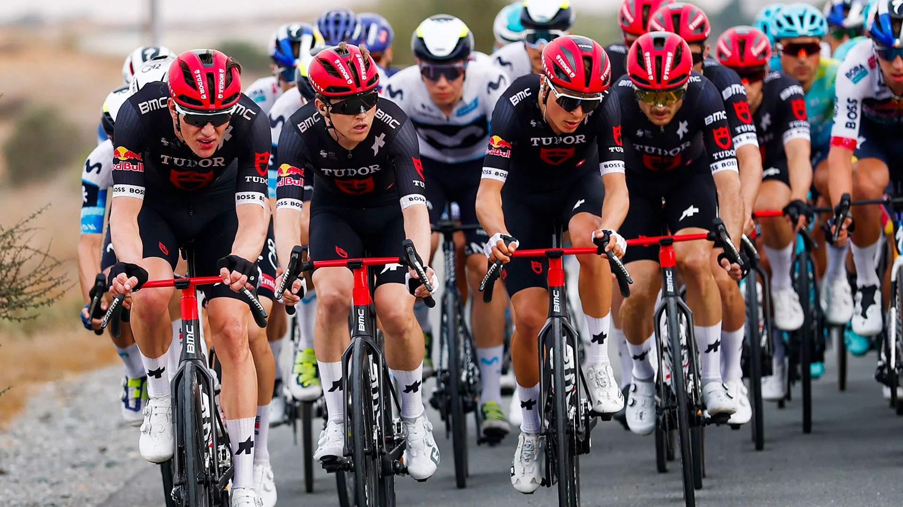

Come diventare ciclista professionista
Diventare un ciclista professionista è il sogno di molti giovani appassionati. Ma dietro le vittorie e i riflettori c’è un percorso lungo, fatto di sacrificio, dedizione e tanto allenamento. Ecco cosa serve davvero per trasformare la passione in una carriera.
1. Iniziare presto e con costanza
La maggior parte dei professionisti inizia tra i 10 e i 14 anni, nelle categorie giovanili. Le gare locali e regionali sono fondamentali per fare esperienza e farsi notare dalle squadre dilettantistiche.
2. L’importanza della squadra
Entrare in una buona squadra under 23 è il trampolino verso il professionismo. Qui si impara a gestire tattiche di corsa, nutrizione, e ad affrontare trasferte e gare di più giorni.
3. Allenamento e mentalità
Un corridore d’élite si allena anche 25 ore a settimana, alternando lavori di forza, resistenza e recupero. Ma la differenza la fa la mente: capacità di soffrire, di restare concentrati e di rialzarsi dopo ogni sconfitta.
4. Alimentazione e recupero
Una dieta equilibrata, con il giusto apporto di carboidrati e proteine, è cruciale. Il sonno e il recupero sono altrettanto importanti: il corpo si adatta e cresce solo se ha tempo di rigenerarsi.
5. Dal dilettantismo al WorldTour
I talenti vengono selezionati da squadre professionistiche tramite osservatori o risultati in gare internazionali. Un buon piazzamento al Giro d’Italia Under 23 o in corse UCI può cambiare una carriera.
Conclusione
Diventare “pro” non è facile, ma non è impossibile. Serve passione vera, pazienza e un obiettivo chiaro. Ogni pedalata è un passo avanti verso quel sogno che si chiama ciclismo professionistico.